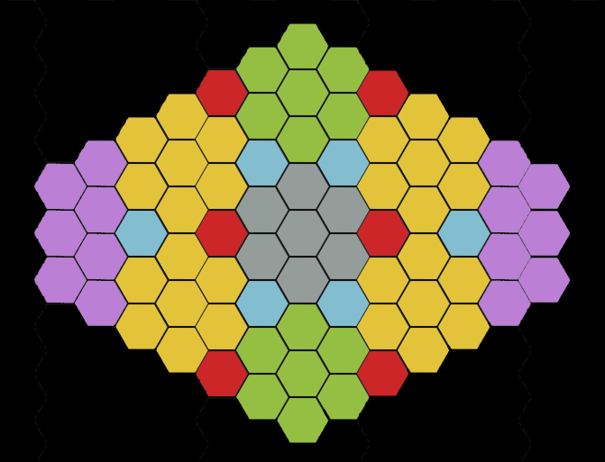

The objective
How to Win
Win immediately by controlling five Farthings or by taking control of the opposing player's Homestead.
- Add the control values of your uncovered pieces in each Farthing.
- The higher total controls that Farthing; tied totals leave it neutral.
- The two edge territories count as one Farthing only when you control both sides.
- Covered pieces in a stack cannot move and contribute no control.
